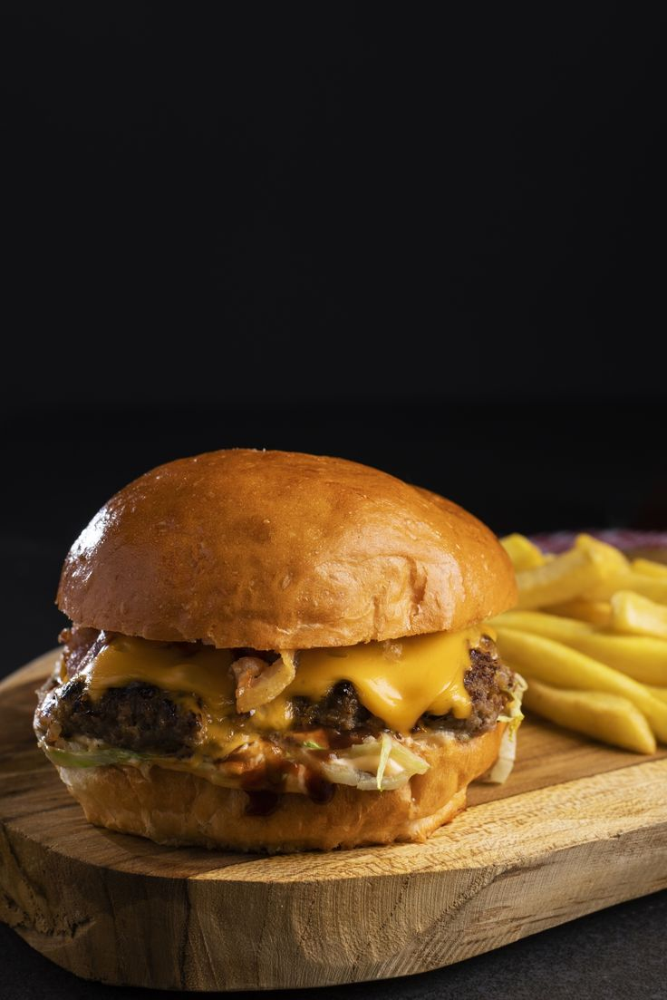
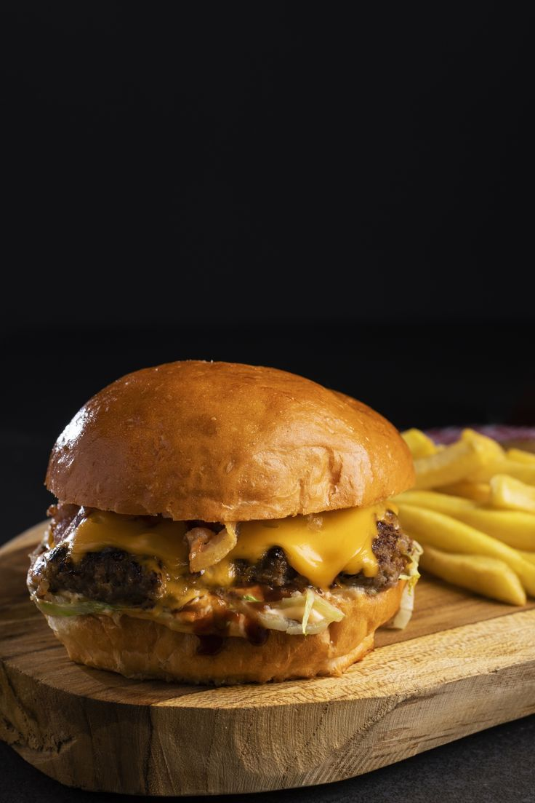
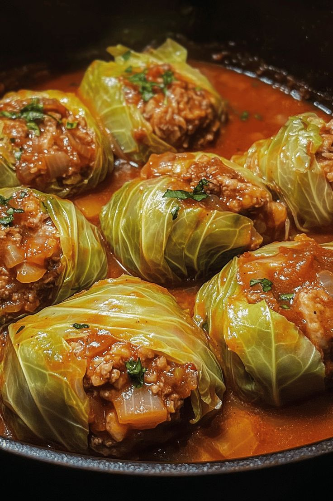
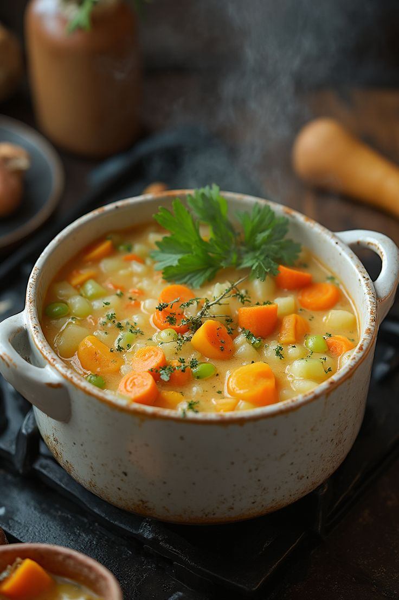
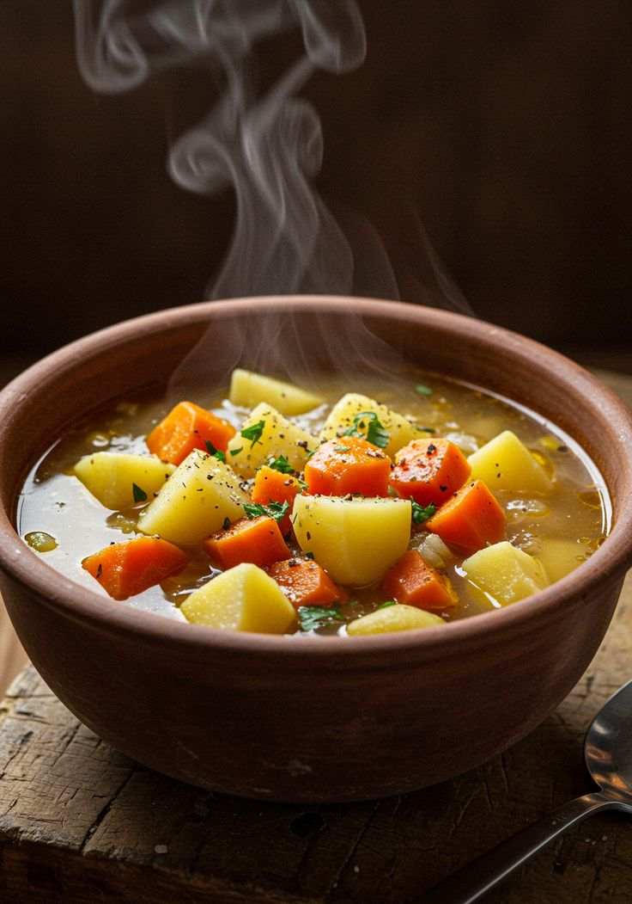
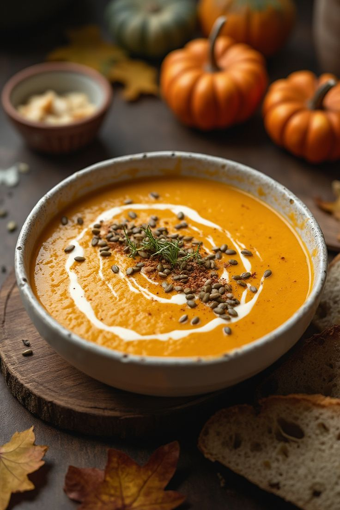
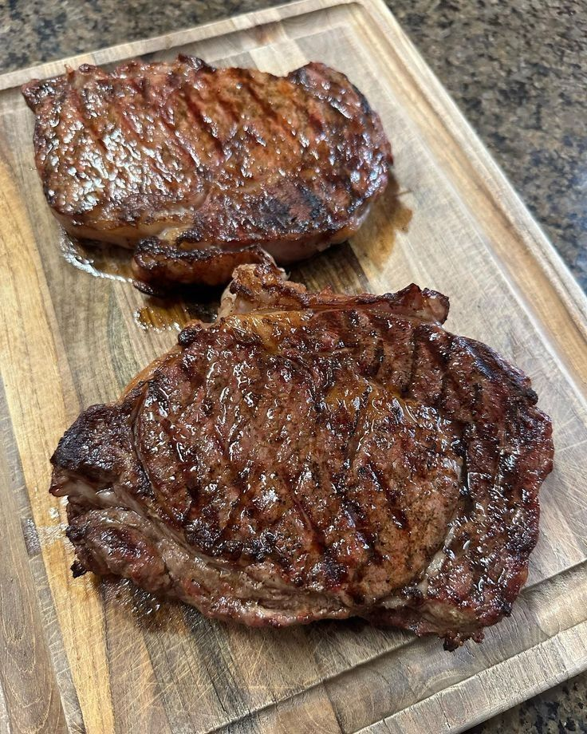
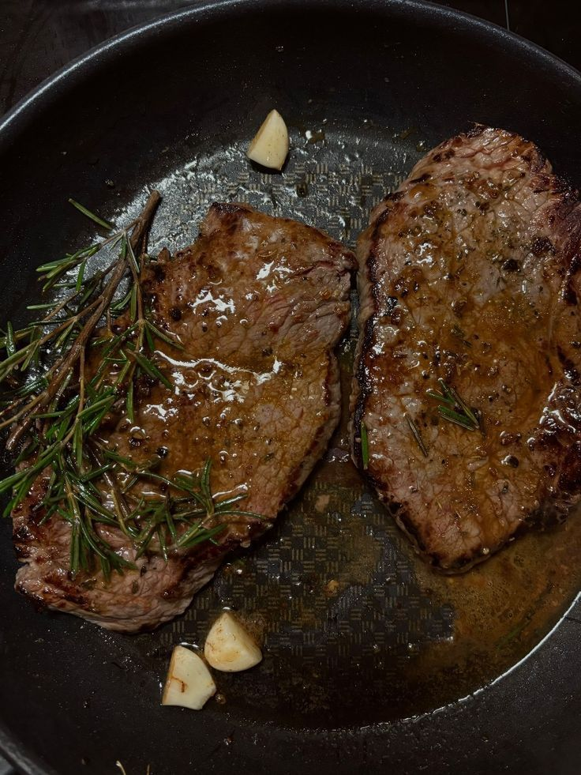
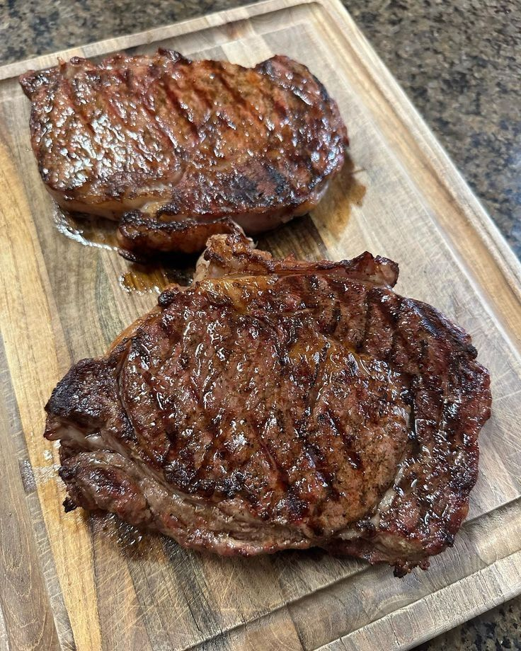
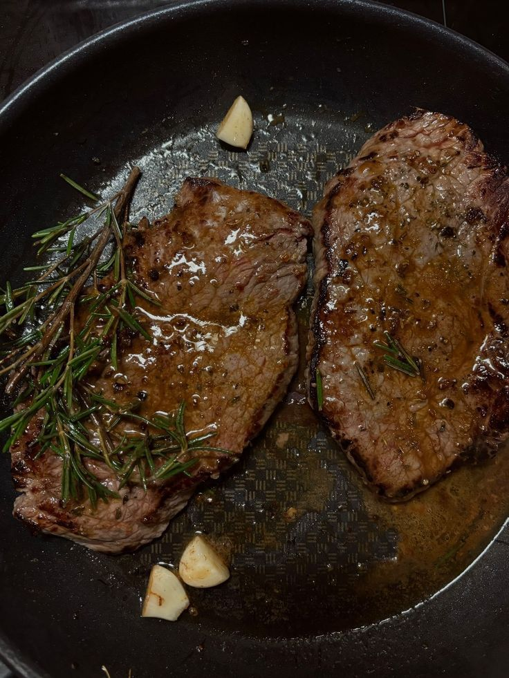

Breakfast
Breakfast is the perfect way to start your day with energy and flavor. In this section, you’ll find some of the most loved morning classics—crispy waffles, fluffy pancakes, and perfectly cooked eggs. Each recipe is simple to make, filling, and guaranteed to brighten your morning. Whether you prefer something sweet, savory, or a mix of both, these dishes will keep you satisfied and ready to take on the dayPancake
Pancakes are a classic breakfast favorite, loved for their soft, fluffy texture and comforting taste. They can be enjoyed plain or topped with fruits, syrup, honey, or even chocolate for extra sweetness. Easy to make with just a few basic ingredients, pancakes are perfect for both beginners and experienced cooks. They are versatile and can be made in many variations—sweet, savory, or even healthy versions. No matter how you serve them, pancakes bring warmth and joy to the table every time.


Waffel
Waffles are a golden, crispy, and fluffy breakfast delight that pair perfectly with both sweet and savory toppings. They are easy to make using a waffle iron and bring a fun twist to the morning table. Whether served with syrup, fruits, whipped cream, or even fried chicken, waffles are versatile and satisfying. Their unique texture makes every bite enjoyable, crunchy on the outside and soft inside. A plate of warm waffles is always a comforting way to start the day.


Egg
Eggs are a versatile and protein-packed ingredient, perfect for any meal of the day. They can be cooked in countless ways—boiled, scrambled, fried, poached, or made into omelets—each bringing a unique taste and texture. Easy to prepare and quick to cook, eggs are both nutritious and satisfying. They can be enjoyed on their own or paired with other ingredients to create delicious dishes. Simple, wholesome, and always comforting, eggs are a breakfast favorite for everyone.


Lunch
Lunch is all about recharging your energy and enjoying a hearty, satisfying meal in the middle of the day. In this section, you’ll discover recipes that balance flavor, nutrition, and comfort—from light bites to filling dishes. Whether you’re craving something quick and simple or a meal to savor, these lunch ideas will keep you fueled and refreshed for the rest of the day.
Burger
Burgers are a classic and satisfying meal loved around the world for their juicy patties and delicious toppings. They can be customized with fresh vegetables, cheese, sauces, and buns to match every taste. Easy to prepare at home or enjoy on the go, burgers offer a perfect balance of flavor and convenience. From traditional beef to creative veggie or chicken options, there’s a burger for everyone. Each bite is a combination of textures and tastes that makes burgers a favorite anytime meal.
 

Salad
Salads are a fresh and healthy choice, perfect for a light yet satisfying meal. They combine crisp vegetables, fruits, proteins, and flavorful dressings to create a burst of taste in every bite. Easy to prepare and highly customizable, salads can be simple or elaborate depending on your mood and ingredients. They are not only nutritious but also colorful and visually appealing, making every meal more inviting. Enjoy a salad as a side or a main dish to keep your lunch vibrant and refreshing.
Sandwitch
Sandwiches are a quick, versatile, and satisfying meal that can be enjoyed anytime. They combine bread with a variety of fillings like meats, cheeses, vegetables, and spreads to create endless flavor combinations. Perfect for a light lunch or a hearty snack, sandwiches are easy to prepare and highly customizable. From classic favorites to creative twists, they offer something for every taste. Simple, delicious, and convenient, a good sandwich always hits the spot.
Dinner
Dinner is the perfect time to relax, unwind, and enjoy a satisfying meal after a busy day. In this section, you’ll find recipes that are hearty, flavorful, and comforting, ranging from simple weeknight dishes to more elaborate meals for special occasions. Each recipe is designed to bring balance, nutrition, and taste to your evening table. Whether you prefer light and healthy options or rich, indulgent dishes, these dinner ideas will help you end your day on a delicious note.
Cabbage-rolls
Cabbage rolls are a hearty and comforting dish made by wrapping flavorful fillings, such as seasoned meat and rice, in tender cabbage leaves. They are baked or simmered in a rich sauce, allowing the flavors to meld together perfectly. This dish is both satisfying and nutritious, offering a balance of protein, vegetables, and grains in every bite. Easy to prepare with a bit of care, cabbage rolls make a wonderful family meal or special occasion dish. Delicious, wholesome, and full of flavor, cabbage rolls are sure to be a favorite at your table.
Soup
Soups are warm, comforting, and perfect for any dinner occasion. They combine flavorful broths with vegetables, meats, or grains to create a wholesome and nourishing meal. Easy to prepare and highly versatile, soups can be light and refreshing or rich and hearty, depending on your preference. They are not only satisfying but also a great way to enjoy a variety of flavors in one bowl. A steaming bowl of soup always brings comfort and warmth to the dinner table.
  Steak
Steak is a classic dinner favorite, loved for its rich flavor, juicy texture, and satisfying bite. It can be cooked to perfection in various styles—grilled, pan-seared, or oven-roasted—depending on your preference. Served with sides like vegetables, potatoes, or sauces, steak makes a hearty and indulgent meal. Easy to season and cook, it’s a versatile dish that suits both casual dinners and special occasions. Every bite of a well-prepared steak delivers warmth, flavor, and pure satisfaction.
 


